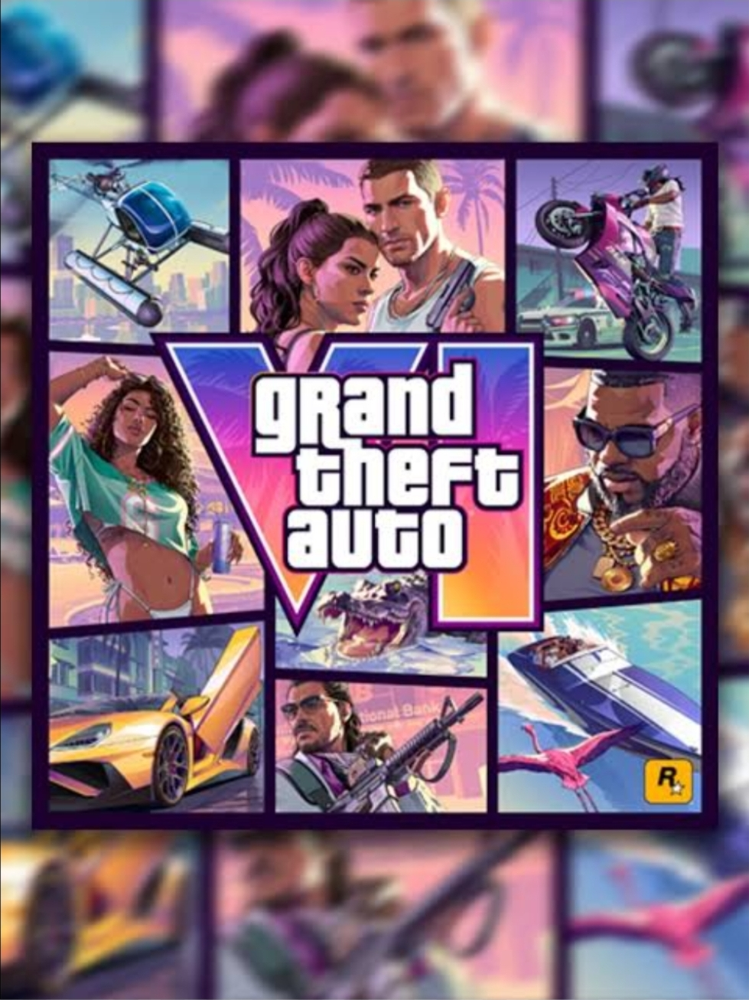

Depois de anos de espera, GTA 6 finalmente está se tornando realidade. O novo jogo da Rockstar Games é um dos lançamentos mais aguardados da história dos videogames e promete trazer uma grande evolução para a franquia.
GTA 6 vai levar os jogadores de volta para Vice City, a cidade inspirada em Miami que apareceu pela primeira vez em Grand Theft Auto: Vice City, lançado em 2002.
A história terá como protagonistas Lucia e Jason, um casal de criminosos que viverá uma aventura envolvendo crimes, perseguições e desafios em um mundo aberto.
O jogo será ambientado no estado fictício de Leonida, tendo Vice City como sua principal cidade. Os trailers mostraram praias, estradas, áreas rurais, pântanos e diferentes regiões.
A Rockstar promete um mundo muito mais detalhado, com mais personagens, animais, veículos e acontecimentos acontecendo enquanto o jogador explora o mapa.
GTA 6 deve trazer uma grande evolução gráfica, aproveitando o poder dos consoles atuais para entregar melhores animações, física e um mundo mais realista.
Os trailers mostraram multidões, festas, barcos, aviões e diversas situações diferentes espalhadas pela cidade.
O lançamento está previsto para 2026. O jogo chegará inicialmente para PlayStation 5 e Xbox Series X|S.
GTA 6 tem a missão de continuar o sucesso de GTA 5, um dos jogos mais vendidos de todos os tempos.
Com uma nova cidade, novos personagens e uma grande evolução tecnológica, GTA 6 promete ser uma das maiores experiências de mundo aberto já criadas.